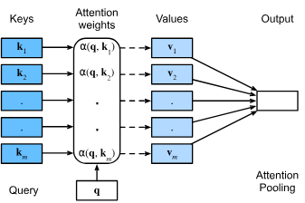
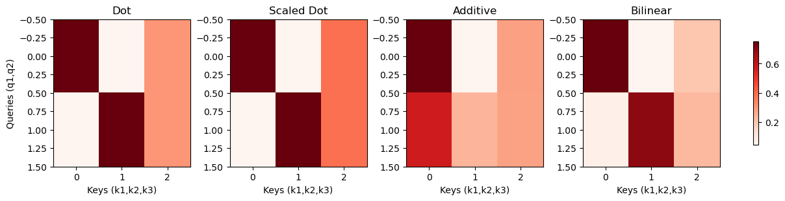
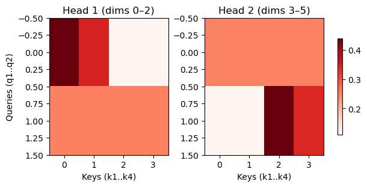
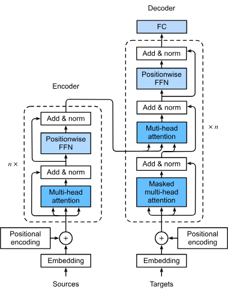
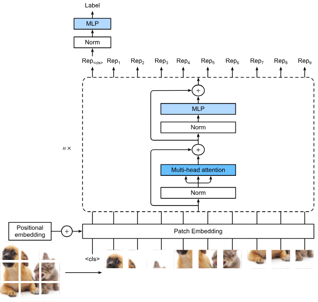
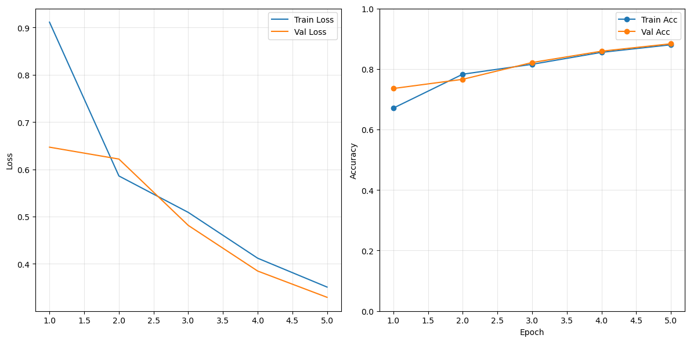

Show code cell source
import math
import time
from typing import Optional, Tuple, List
import numpy as np
import matplotlib.pyplot as plt
import torch
import torch.nn as nn
import torch.nn.functional as F
import torchvision.transforms as T
from torch.utils.data import DataLoader
from PIL import Image
Mecanismos de Atención y Transformadores#
Las CNNs, con sus sesgos inductivos de localidad e invariancia traslacional, dominaron las tareas de visión durante décadas, desde LeNet hasta las ResNets modernas. Esto cambió con la llegada de los Transformadores de Visión (Vision Transformers), que superaron a las CNNs en precisión a pesar de tener sesgos incorporados más débiles.
Si bien algunos avances de los Transformadores pueden adaptarse a las CNNs, esto suele implicar un mayor costo computacional, y las optimizaciones recientes de hardware han favorecido aún más a los Transformadores. Su éxito se debe en gran medida a los enormes conjuntos de datos de imágenes, que permitieron a los modelos aprender la estructura directamente de los datos. Hoy en día, los Vision Transformers marcan el estado del arte en clasificación de imágenes a gran escala, mostrando que la escalabilidad y la autoatención pueden superar a los sesgos inductivos cuidadosamente diseñados.
De hecho, estamos presenciando un cambio en todos los campos, ya que los Transformadores han desplazado a modelos anteriores en casi todos los dominios. En procesamiento de lenguaje natural, los modelos de Transformadores preentrenados como BERT, RoBERTa y GPT se han convertido en el punto de partida predeterminado, ajustados para casi todas las tareas posteriores, mientras que arquitecturas similares se están expandiendo al habla, el aprendizaje por refuerzo y los datos de grafos.
La innovación clave es el mecanismo de atención, que permite a los modelos centrarse dinámicamente en partes relevantes de la entrada en lugar de comprimir secuencias en vectores fijos. Introducida inicialmente como una mejora a las RNNs, la atención resultó tan poderosa que Vaswani et al. (2017) reemplazaron la recurrencia por completo, dando lugar al Transformador. Su combinación con el preentrenamiento a gran escala en enormes corpus creó una brecha de rendimiento decisiva frente a las arquitecturas tradicionales, dando paso a la era de los modelos fundacionales: grandes redes de propósito general adaptadas a tareas específicas mediante fine-tuning.
Consultas, Claves y Valores#
La mayoría de las redes neuronales tradicionalmente asumen entradas de tamaño fijo —por ejemplo, imágenes con una resolución dada—. Esta suposición falla cuando las entradas son largas o de longitud variable, como en la traducción automática, donde es difícil comprimir toda la información relevante en un solo vector sin perder detalle.
El mecanismo de atención resuelve este problema tratando la entrada como un conjunto de pares clave–valor e introduciendo una consulta que recupera la información relevante. Conceptualmente, esto es similar a una búsqueda en una base de datos: las claves actúan como identificadores, los valores almacenan contenido y una consulta recupera los valores más relevantes. Pero en lugar de devolver solo una coincidencia, la atención calcula una combinación ponderada de todos los valores:
donde cada peso $\alpha(\mathbf{q}, \mathbf{k}_i)$ mide qué tan fuerte la clave $\mathbf{k}_i$ coincide con la consulta $\mathbf{q}$. Normalizar los pesos con una softmax asegura que sean no negativos y sumen 1, convirtiéndolos en una distribución de probabilidad que puede interpretarse (con cautela) como “importancia relativa”. Esto permite cubrir varios casos útiles: coincidencia exacta (un peso = 1), promediado (todos los pesos iguales) o combinaciones suaves de elementos relevantes.
Las principales fortalezas de la atención son que es diferenciable, escalable a entradas grandes y eficiente en parámetros, lo que hace posible que un modelo “se enfoque” de manera flexible sin comprimir todo en un cuello de botella de longitud fija.

La Función de Puntuación#
Una estrategia común para asegurar que los pesos sumen 1 es normalizarlos mediante
\(\alpha(\mathbf{q}, \mathbf{k}_i) = \frac{\alpha(\mathbf{q}, \mathbf{k}_i)}{{\sum_j} \alpha(\mathbf{q}, \mathbf{k}_j)}.\)
En particular, para garantizar que los pesos también sean no negativos, se puede recurrir a la exponenciación. Esto significa que ahora podemos elegir cualquier función de puntuación $a(\mathbf{q}, \mathbf{k})$ y luego aplicarle la operación softmax usada en los modelos multinomiales:
Varias formas importantes de $a$ se usan comúnmente:
Atención por producto punto
\[ a(\mathbf{q}, \mathbf{k}_i) = \mathbf{q}^\top \mathbf{k}_i . \]Es la forma más simple, donde la similitud se define por el producto interno entre los dos vectores. Consultas y claves que apuntan en la misma dirección producen puntuaciones grandes y positivas, mientras que vectores ortogonales u opuestos producen puntuaciones bajas o negativas. Esta formulación es eficiente porque se reduce a multiplicación de matrices cuando se procesan muchas consultas y claves en paralelo.
Atención por producto punto escalado
\[ a(\mathbf{q}, \mathbf{k}_i) = \frac{\mathbf{q}^\top \mathbf{k}_i}{\sqrt{d}} , \]donde $d$ es la dimensión de los vectores. Cuando $d$ es grande, el producto punto puede volverse de gran magnitud, llevando a la softmax a producir distribuciones extremadamente afiladas con gradientes que se desvanecen. Dividir entre $\sqrt{d}$ contrarresta este efecto, manteniendo las puntuaciones en un rango que permite un entrenamiento estable. Esta es la forma usada en la arquitectura Transformer.
Atención aditiva (Bahdanau)
\[ a(\mathbf{q}, \mathbf{k}_i) = \mathbf{w}^\top \tanh(W_q \mathbf{q} + W_k \mathbf{k}_i) , \]donde $W_q$ y $W_k$ son matrices de proyección aprendibles y $\mathbf{w}$ es un vector aprendible. En lugar de comparar consultas y claves directamente, primero se mapean a un espacio conjunto y se combinan mediante una transformación no lineal. La tanh introduce no linealidad, permitiendo al modelo aprender relaciones complejas más allá de la similitud lineal. Esta formulación es más flexible pero típicamente más costosa computacionalmente que la atención por producto punto.
Atención bilineal
\[ a(\mathbf{q}, \mathbf{k}_i) = \mathbf{q}^\top W \mathbf{k}_i , \]donde $W$ es una matriz de pesos aprendible. Esto generaliza el producto punto al permitir una transformación lineal de las claves antes de compararlas, dando al modelo mayor capacidad para aprender nociones de similitud específicas de la tarea.
Formas generales En principio, cualquier función diferenciable puede servir como $a$, siempre que produzca puntuaciones escalares que puedan exponenciarse y normalizarse. Esto puede incluir redes neuronales más profundas, funciones kernel o medidas de similitud específicas de la tarea.
Cada formulación de $a$ representa una manera distinta de medir la relevancia, intercambiando costo computacional, expresividad y estabilidad. La elección de la función de puntuación es crítica para el comportamiento y la efectividad del mecanismo de atención.
Para entender mejor cómo distintas funciones de puntuación moldean el mecanismo de atención, construyamos un pequeño ejemplo con solo dos consultas y tres claves. Cada consulta y cada clave se representa como un vector de 4 dimensiones. Aplicando distintas funciones de puntuación —producto punto, producto punto escalado, aditiva (Bahdanau) y bilineal— podemos calcular las puntuaciones de atención, normalizarlas con una softmax para obtener pesos, y visualizar las distribuciones resultantes como mapas de calor. Estas gráficas muestran cómo cada consulta presta atención de manera distinta a las claves disponibles según la medida de similitud elegida.
Show code cell source
def show_heatmaps(matrices, xlabel, ylabel, titles=None, cmap='Reds'):
A = np.array(matrices)
num_rows, num_cols, _, _ = A.shape
fig, axes = plt.subplots(
num_rows, num_cols,
figsize=(3*num_cols, 3*num_rows),
squeeze=False,
constrained_layout=True
)
for i in range(num_rows):
for j in range(num_cols):
ax = axes[i, j]
im = ax.imshow(A[i, j], cmap=cmap, aspect='auto')
if i == num_rows - 1:
ax.set_xlabel(xlabel)
if j == 0:
ax.set_ylabel(ylabel)
if titles and i == 0:
ax.set_title(titles[j])
# single shared colorbar, positioned on the right
fig.colorbar(im, ax=axes, shrink=0.7, location='right')
plt.show()
# Toy example
def softmax(x, axis=-1):
x = x - np.max(x, axis=axis, keepdims=True)
return np.exp(x) / np.sum(np.exp(x), axis=axis, keepdims=True)
rng = np.random.default_rng(0)
d = 4
Q = np.array([[1.0, 0.0, 0.5, -0.5],
[0.0, 1.0, -0.5, 0.5]])
K = np.array([[1.0, 0.0, 0.5, -0.5],
[0.0, 1.0, -0.5, 0.5],
[0.7, 0.7, 0.0, 0.0]])
def scores_dot(Q, K): return Q @ K.T
def scores_scaled_dot(Q, K): return (Q @ K.T) / np.sqrt(Q.shape[1])
def scores_additive(Q, K, dh=8):
W_q = rng.normal(scale=0.5, size=(dh, Q.shape[1]))
W_k = rng.normal(scale=0.5, size=(dh, K.shape[1]))
w = rng.normal(scale=0.5, size=(dh,))
Qp = (W_q @ Q.T).T
Kp = (W_k @ K.T).T
H = np.tanh(Qp[:, None, :] + Kp[None, :, :])
return H @ w
def scores_bilinear(Q, K):
W = rng.normal(scale=0.4, size=(Q.shape[1], K.shape[1]))
return Q @ W @ K.T
A_dot = softmax(scores_dot(Q, K), axis=1)
A_sdot = softmax(scores_scaled_dot(Q, K), axis=1)
A_add = softmax(scores_additive(Q, K), axis=1)
A_bilin = softmax(scores_bilinear(Q, K), axis=1)
mats = np.stack([A_dot, A_sdot, A_add, A_bilin], axis=0)[None, ...]
titles = ["Dot", "Scaled Dot", "Additive", "Bilinear"]
show_heatmaps(mats, xlabel="Keys (k1,k2,k3)", ylabel="Queries (q1,q2)", titles=titles)

Los mapas de calor revelan cómo la elección de la función de puntuación cambia la distribución de la atención. Por ejemplo, con el producto punto y el producto punto escalado, cada consulta tiende a asignar un peso alto a la clave más similar en dirección, produciendo un enfoque marcado. El escalado principalmente evita que la distribución se vuelva excesivamente aguda cuando crece la dimensión de los vectores. La atención aditiva suele generar distribuciones más suaves porque la comparación no lineal aprendida puede equilibrar las contribuciones de múltiples claves. La atención bilineal generaliza el producto punto y puede desplazar los pesos según la transformación aprendida, favoreciendo a veces claves que no dominarían bajo un producto punto en bruto.
Atención Multi-Cabeza#
Un solo mecanismo de atención solo puede capturar un tipo de dependencia entre consultas, claves y valores. En la práctica, sin embargo, a menudo queremos modelar distintos tipos de relaciones simultáneamente —por ejemplo, dependencias de corto y largo alcance en una secuencia—. Para lograrlo, la atención multi-cabeza proyecta consultas, claves y valores en múltiples subespacios de representación y aplica atención en paralelo.
Formalmente, dada una consulta $\mathbf{q}\in\mathbb{R}^{d_q}$, una clave $\mathbf{k}\in\mathbb{R}^{d_k}$ y un valor $\mathbf{v}\in\mathbb{R}^{d_v}$, cada cabeza $\mathbf{h}_i$ ($i=1,\dots,h$) se calcula como
donde $\mathbf{W}_i^{(q)} \in \mathbb{R}^{p_q \times d_q}$, $\mathbf{W}_i^{(k)} \in \mathbb{R}^{p_k \times d_k}$ y $\mathbf{W}_i^{(v)} \in \mathbb{R}^{p_v \times d_v}$ son proyecciones aprendidas, y $f$ es una función de atención (por ejemplo, producto punto escalado).
Las salidas de todas las $h$ cabezas se concatenan y se mapean a la dimensión final $p_o$ mediante
con $\mathbf{W}_o \in \mathbb{R}^{p_o \times hp_v}$.
De este modo, cada cabeza puede centrarse en distintos aspectos de la entrada, lo que permite al modelo representar relaciones más ricas que un único mecanismo de atención.
En la práctica, para mantener el cómputo manejable, se fija $p_q = p_k = p_v = p_o/h$. Esto asegura que cada cabeza tenga menor dimensionalidad, mientras que su concatenación preserva el tamaño total del modelo. Las cabezas pueden calcularse en paralelo proyectando consultas, claves y valores en dimensiones $hp_q, hp_k, hp_v$, y luego dividiéndolos entre las cabezas.
Para construir intuición sobre la atención multi-cabeza, podemos plantear un ejemplo sencillo con dos consultas (q1, q2) y cuatro claves (k1–k4). El espacio de características se divide en dos mitades, de modo que cada cabeza de atención opere sobre un subespacio distinto:
Cabeza 1: se centra en las tres primeras dimensiones.
Cabeza 2: se centra en las tres últimas dimensiones.
Las consultas y claves se diseñan de manera que q1 se alinee con la primera mitad (k1, k2) y q2 se alinee con la segunda mitad (k3, k4). Al visualizar los pesos de atención, podemos ver cómo cada cabeza aprende a especializarse.
Show code cell source
"""
Toy Example: Multi-Head Attention Heatmaps
"""
import numpy as np
import matplotlib.pyplot as plt
def show_heatmaps(matrices, xlabel, ylabel, titles=None, cmap='Reds'):
A = np.array(matrices)
num_rows, num_cols, _, _ = A.shape
fig, axes = plt.subplots(num_rows, num_cols,
figsize=(3*num_cols, 3*num_rows),
squeeze=False,
constrained_layout=True)
for i in range(num_rows):
for j in range(num_cols):
ax = axes[i, j]
im = ax.imshow(A[i, j], cmap=cmap, aspect='auto')
if i == num_rows - 1:
ax.set_xlabel(xlabel)
if j == 0:
ax.set_ylabel(ylabel)
if titles and i == 0:
ax.set_title(titles[j])
fig.colorbar(im, ax=axes, shrink=0.7, location='right')
plt.show()
def softmax(x, axis=-1):
x = x - np.max(x, axis=axis, keepdims=True)
return np.exp(x) / np.sum(np.exp(x), axis=axis, keepdims=True)
# Define queries and keys
d_model = 6
h = 2
d_h = d_model // h
Q = np.array([
[1.0, 0.9, 0.8, 0.0, 0.0, 0.0], # q1: first half active
[0.0, 0.0, 0.0, 1.0, 0.9, 0.8], # q2: second half active
])
K = np.array([
[1.0, 0.8, 0.7, 0.0, 0.0, 0.0], # k1: first half
[0.85, 0.6, 0.6, 0.0, 0.0, 0.0], # k2: first half
[0.0, 0.0, 0.0, 1.0, 0.9, 0.7], # k3: second half
[0.0, 0.0, 0.0, 0.85, 0.65, 0.6] # k4: second half
])
# Split into heads
Q_h1, Q_h2 = Q[:, 0:3], Q[:, 3:6]
K_h1, K_h2 = K[:, 0:3], K[:, 3:6]
scale = 1 / np.sqrt(d_h)
S1 = (Q_h1 @ K_h1.T) * scale
S2 = (Q_h2 @ K_h2.T) * scale
A1 = softmax(S1, axis=1)
A2 = softmax(S2, axis=1)
# Visualize
mats = np.stack([A1, A2], axis=0)[None, ...]
titles = ["Head 1 (dims 0–2)", "Head 2 (dims 3–5)"]
show_heatmaps(mats, xlabel="Keys (k1..k4)", ylabel="Queries (q1..q2)", titles=titles)

Los mapas de calor muestran claramente que:
Cabeza 1 asigna altos pesos de atención de q1 a k1 y k2, ya que comparten características fuertes en las tres primeras dimensiones. Sin embargo, q2 apenas presta atención a estas claves.
Cabeza 2 asigna altos pesos de atención de q2 a k3 y k4, ya que comparten características fuertes en las tres últimas dimensiones. Aquí q1 es en gran parte ignorado.
Esto demuestra cómo la atención multi-cabeza permite que diferentes cabezas se enfoquen en distintos aspectos del espacio de representación de la entrada, lo que habilita al modelo a capturar múltiples tipos de dependencias en paralelo.
Autoatención (Self-Attention)#
La autoatención permite que cada token en una secuencia atienda directamente a todos los demás tokens. Dadas incrustaciones de entrada $\mathbf{x}_1, \ldots, \mathbf{x}_n \in \mathbb{R}^d$, la autoatención produce salidas $\mathbf{y}_1, \ldots, \mathbf{y}_n$ de la misma dimensión, donde cada salida es una combinación ponderada de todos los tokens de la secuencia. Los pesos se determinan por la compatibilidad entre la consulta de un token y las claves de los demás tokens.
Este mecanismo permite que cada token incorpore información contextual de toda la secuencia, sin estar restringido por la distancia (como en las RNNs) ni por la localidad (como en las CNNs). Cuando se extiende a atención multi-cabeza, varias cabezas de atención permiten al modelo enfocarse en diferentes tipos de dependencias en paralelo.
En general, la autoatención es muy eficaz para capturar relaciones de largo alcance. Sin embargo, tiene complejidad computacional cuadrática respecto a la longitud de la secuencia, lo que la hace prohibitivamente lenta para secuencias muy largas. Para incluir la información del orden, se puede inyectar información posicional absoluta o relativa añadiendo codificaciones posicionales a las representaciones de entrada.
Codificación Posicional#
Surge un desafío porque la autoatención por sí sola no preserva el orden de la secuencia: todos los tokens interactúan de forma simétrica. Para inyectar información sobre el orden, se añaden codificaciones posicionales a las incrustaciones de los tokens.
Un esquema común usa funciones sinusoidales:
donde $i$ es la posición del token, $d$ es la dimensión de la incrustación, y $j$ indexa las dimensiones. Estas codificaciones crean patrones suaves y continuos de frecuencias variables a lo largo de las dimensiones, asegurando que cada posición tenga una representación única.
Posición absoluta: cada fila codifica un índice específico.
Posición relativa: se representa de forma natural, ya que la codificación en la posición $i+\delta$ puede expresarse como una proyección lineal de la codificación en $i$, gracias a las identidades trigonométricas de desplazamiento.
Esta doble propiedad hace que las codificaciones sinusoidales sean eficientes y potentes.
La Arquitectura Transformer#
La autoatención permite tanto el cálculo en paralelo como la menor longitud de camino máxima comparada con CNNs y RNNs. Esto la hace atractiva como base de arquitecturas profundas. El Transformer (Vaswani et al., 2017) es el primer modelo construido completamente sobre atención, sin recurrencia ni convolución. Inicialmente propuesto para aprendizaje secuencia a secuencia en PLN, ahora se usa ampliamente en lenguaje, visión, voz y aprendizaje por refuerzo.

Resumen del Modelo#
El Transformer sigue la estructura codificador–decodificador. Tanto las incrustaciones de los tokens de entrada como de salida se combinan con codificaciones posicionales antes de pasar por capas apiladas de autoatención y redes feed-forward.
Codificador: Cada capa tiene dos subcapas:
Autoatención multi-cabeza.
Red feed-forward por posición (FFN).
Ambas subcapas usan conexiones residuales seguidas de normalización por capas. El codificador produce una secuencia de vectores de dimensión $d$.
Decodificador: Cada capa tiene tres subcapas:
Autoatención multi-cabeza enmascarada (para garantizar autoregresión).
Atención codificador–decodificador, donde las consultas provienen del decodificador y las claves/valores del codificador.
Red feed-forward por posición.
Como en el codificador, cada subcapa está envuelta por conexiones residuales y normalización por capas.
Así, el codificador genera representaciones contextuales de la secuencia de entrada, mientras que el decodificador produce la secuencia de salida paso a paso, atendiendo tanto a las salidas pasadas como a los estados del codificador.
Componentes Clave#
Red Feed-Forward por Posición#
La misma MLP se aplica de manera independiente a cada posición:
transformando la dimensión oculta $d$ en $d_\text{ff}$ y de regreso.
Show code cell source
def scaled_dot_product_attention(
Q: torch.Tensor, # (B, h, T_q, d_k)
K: torch.Tensor, # (B, h, T_k, d_k)
V: torch.Tensor, # (B, h, T_k, d_v) typically d_v == d_k
attn_mask: Optional[torch.Tensor] = None # (B, 1 or h, T_q, T_k), True = mask
) -> Tuple[torch.Tensor, torch.Tensor]:
"""
Returns:
context: (B, h, T_q, d_v)
attn_weights: (B, h, T_q, T_k)
"""
d_k = Q.size(-1)
scores = torch.matmul(Q, K.transpose(-2, -1)) / math.sqrt(d_k) # (B,h,T_q,T_k)
if attn_mask is not None:
# Masked positions get large negative score so softmax ~ 0 there
scores = scores.masked_fill(attn_mask, float('-inf'))
attn_weights = F.softmax(scores, dim=-1) # (B,h,T_q,T_k)
context = torch.matmul(attn_weights, V) # (B,h,T_q,d_v)
return context, attn_weights
Show code cell source
class MultiHeadAttention(nn.Module):
def __init__(self, d_model: int, num_heads: int, dropout: float = 0.0, bias: bool = True):
super().__init__()
assert d_model % num_heads == 0, "d_model must be divisible by num_heads"
self.d_model = d_model
self.num_heads = num_heads
self.d_k = d_model // num_heads
self.d_v = d_model // num_heads
self.W_q = nn.Linear(d_model, d_model, bias=bias)
self.W_k = nn.Linear(d_model, d_model, bias=bias)
self.W_v = nn.Linear(d_model, d_model, bias=bias)
self.W_o = nn.Linear(d_model, d_model, bias=bias)
self.dropout = nn.Dropout(dropout)
def _split_heads(self, X: torch.Tensor) -> torch.Tensor:
# (B, T, d_model) -> (B, h, T, d_k)
B, T, _ = X.shape
X = X.view(B, T, self.num_heads, self.d_k).transpose(1, 2)
return X
def _combine_heads(self, X: torch.Tensor) -> torch.Tensor:
# (B, h, T, d_k) -> (B, T, d_model)
B, h, T, d_k = X.shape
X = X.transpose(1, 2).contiguous().view(B, T, h * d_k)
return X
def forward(
self,
query: torch.Tensor, # (B, T_q, d_model)
key: torch.Tensor, # (B, T_k, d_model)
value: torch.Tensor, # (B, T_k, d_model)
attn_mask: Optional[torch.Tensor] = None # (B, 1 or h, T_q, T_k), True=mask
) -> Tuple[torch.Tensor, torch.Tensor]:
Q = self._split_heads(self.W_q(query))
K = self._split_heads(self.W_k(key))
V = self._split_heads(self.W_v(value))
if attn_mask is not None:
# Expand single-head masks to multi-head if needed
if attn_mask.size(1) == 1 and self.num_heads > 1:
attn_mask = attn_mask.expand(-1, self.num_heads, -1, -1)
context, attn_weights = scaled_dot_product_attention(Q, K, V, attn_mask)
context = self._combine_heads(self.dropout(context))
out = self.W_o(context)
return out, attn_weights
Show code cell source
class PositionalEncoding(nn.Module):
def __init__(self, d_model: int, dropout: float = 0.0, max_len: int = 10000):
super().__init__()
self.dropout = nn.Dropout(dropout)
# Create matrix of shape (max_len, d_model)
pe = torch.zeros(max_len, d_model)
pos = torch.arange(0, max_len, dtype=torch.float32).unsqueeze(1)
div = torch.exp(torch.arange(0, d_model, 2, dtype=torch.float32) *
(-math.log(10000.0) / d_model))
pe[:, 0::2] = torch.sin(pos * div)
pe[:, 1::2] = torch.cos(pos * div)
pe = pe.unsqueeze(0) # (1, max_len, d_model)
self.register_buffer('pe', pe) # not a parameter
def forward(self, x: torch.Tensor) -> torch.Tensor:
"""
x: (B, T, d_model)
"""
T = x.size(1)
x = x + self.pe[:, :T, :]
return self.dropout(x)
Show code cell source
class AddNorm(nn.Module):
def __init__(self, d_model: int, dropout: float = 0.0):
super().__init__()
self.dropout = nn.Dropout(dropout)
self.norm = nn.LayerNorm(d_model)
def forward(self, x: torch.Tensor, sublayer_out: torch.Tensor) -> torch.Tensor:
return self.norm(x + self.dropout(sublayer_out))
class PositionWiseFFN(nn.Module):
def __init__(self, d_model: int, d_ff: int, dropout: float = 0.0):
super().__init__()
self.net = nn.Sequential(
nn.Linear(d_model, d_ff),
nn.ReLU(),
nn.Dropout(dropout),
nn.Linear(d_ff, d_model)
)
def forward(self, x: torch.Tensor) -> torch.Tensor:
return self.net(x)
Conexión Residual + Normalización por Capas#
La salida de cada subcapa se combina con su entrada:
lo que estabiliza el entrenamiento y permite apilar redes más profundas.
Codificador#
Un bloque del codificador = Autoatención multi-cabeza → Add&Norm → FFN → Add&Norm. Apilar $N$ de estos bloques forma el codificador. Las incrustaciones de entrada se reescalan por $\sqrt{d}$ antes de añadir las codificaciones posicionales.
Show code cell source
def make_padding_mask(
key_padding: torch.Tensor, # (B, T_k) with 1 for valid, 0 for pad OR True/False
query_len: int
) -> torch.Tensor:
"""
Returns a mask of shape (B, 1, T_q, T_k), where True indicates *masked* positions.
key_padding can be:
- bool/byte mask: True for valid (or False) — we standardize below.
- 1/0 tensor: 1 valid, 0 pad.
"""
if key_padding.dtype != torch.bool:
key_padding = key_padding != 0 # 1->True(valid), 0->False(pad)
# Invert to True for pad positions:
pad_mask = ~key_padding # True on pads
pad_mask = pad_mask.unsqueeze(1).unsqueeze(1) # (B,1,1,T_k)
pad_mask = pad_mask.expand(-1, 1, query_len, -1) # (B,1,T_q,T_k)
return pad_mask # True = mask
def make_causal_mask(T: int, device=None) -> torch.Tensor:
"""
Returns a mask of shape (1, 1, T, T) with True above the diagonal (future positions).
"""
mask = torch.triu(torch.ones(T, T, dtype=torch.bool, device=device), diagonal=1)
return mask.unsqueeze(0).unsqueeze(0) # (1,1,T,T)
class TransformerEncoderBlock(nn.Module):
def __init__(self, d_model: int, num_heads: int, d_ff: int, dropout: float = 0.0):
super().__init__()
self.mha = MultiHeadAttention(d_model, num_heads, dropout)
self.addnorm1 = AddNorm(d_model, dropout)
self.ffn = PositionWiseFFN(d_model, d_ff, dropout)
self.addnorm2 = AddNorm(d_model, dropout)
def forward(
self,
x: torch.Tensor, # (B, T, d_model)
src_key_padding_mask: Optional[torch.Tensor] = None # (B, T) 1=valid, 0=pad or bool
) -> Tuple[torch.Tensor, torch.Tensor]:
B, T, _ = x.shape
attn_mask = None
if src_key_padding_mask is not None:
attn_mask = make_padding_mask(src_key_padding_mask, query_len=T) # (B,1,T,T)
attn_out, attn_w = self.mha(x, x, x, attn_mask=attn_mask) # self-attention
x = self.addnorm1(x, attn_out)
x = self.addnorm2(x, self.ffn(x))
return x, attn_w # return attention for visualization
class TransformerEncoder(nn.Module):
def __init__(self, vocab_size: int, d_model: int, num_layers: int,
num_heads: int, d_ff: int, dropout: float = 0.0, max_len: int = 10000):
super().__init__()
self.d_model = d_model
self.emb = nn.Embedding(vocab_size, d_model)
self.pos = PositionalEncoding(d_model, dropout, max_len)
self.layers = nn.ModuleList([
TransformerEncoderBlock(d_model, num_heads, d_ff, dropout)
for _ in range(num_layers)
])
def forward(
self,
src_tokens: torch.Tensor, # (B, T_src)
src_key_padding_mask: Optional[torch.Tensor] = None # (B, T_src)
) -> Tuple[torch.Tensor, List[torch.Tensor]]:
x = self.emb(src_tokens) * math.sqrt(self.d_model)
x = self.pos(x)
attn_weights_per_layer = []
for layer in self.layers:
x, attn_w = layer(x, src_key_padding_mask)
attn_weights_per_layer.append(attn_w)
return x, attn_weights_per_layer # (B,T,d_model), list of (B,h,T,T)
Decodificador#
Un bloque del decodificador = Autoatención multi-cabeza enmascarada → Add&Norm → Atención codificador–decodificador → Add&Norm → FFN → Add&Norm. Apilar $N$ de estos bloques forma el decodificador, seguido de una capa densa que proyecta al vocabulario.
class TransformerDecoderBlock(nn.Module):
def __init__(self, d_model: int, num_heads: int, d_ff: int, dropout: float = 0.0):
super().__init__()
self.self_mha = MultiHeadAttention(d_model, num_heads, dropout)
self.addnorm1 = AddNorm(d_model, dropout)
self.cross_mha = MultiHeadAttention(d_model, num_heads, dropout)
self.addnorm2 = AddNorm(d_model, dropout)
self.ffn = PositionWiseFFN(d_model, d_ff, dropout)
self.addnorm3 = AddNorm(d_model, dropout)
def forward(
self,
x: torch.Tensor, # (B, T_tgt, d_model)
enc_out: torch.Tensor, # (B, T_src, d_model)
tgt_key_padding_mask: Optional[torch.Tensor] = None, # (B, T_tgt)
src_key_padding_mask: Optional[torch.Tensor] = None # (B, T_src)
) -> Tuple[torch.Tensor, torch.Tensor, torch.Tensor]:
B, T_tgt, _ = x.shape
T_src = enc_out.size(1)
# Causal mask for decoder self-attention
causal = make_causal_mask(T_tgt, device=x.device) # (1,1,T_tgt,T_tgt)
self_mask = causal
if tgt_key_padding_mask is not None:
pad_mask = make_padding_mask(tgt_key_padding_mask, query_len=T_tgt) # (B,1,T_tgt,T_tgt)
self_mask = self_mask | pad_mask # True where masked
# Self-attention over decoder inputs
self_out, self_attn_w = self.self_mha(x, x, x, self_mask)
x = self.addnorm1(x, self_out)
# Encoder–decoder attention (no causal mask; only pad mask on source)
cross_mask = None
if src_key_padding_mask is not None:
cross_mask = make_padding_mask(src_key_padding_mask, query_len=T_tgt) # (B,1,T_tgt,T_src)
cross_out, cross_attn_w = self.cross_mha(x, enc_out, enc_out, cross_mask)
x = self.addnorm2(x, cross_out)
x = self.addnorm3(x, self.ffn(x))
return x, self_attn_w, cross_attn_w
class TransformerDecoder(nn.Module):
def __init__(self, vocab_size: int, d_model: int, num_layers: int,
num_heads: int, d_ff: int, dropout: float = 0.0, max_len: int = 10000):
super().__init__()
self.d_model = d_model
self.emb = nn.Embedding(vocab_size, d_model)
self.pos = PositionalEncoding(d_model, dropout, max_len)
self.layers = nn.ModuleList([
TransformerDecoderBlock(d_model, num_heads, d_ff, dropout)
for _ in range(num_layers)
])
self.out_proj = nn.Linear(d_model, vocab_size)
def forward(
self,
tgt_tokens: torch.Tensor, # (B, T_tgt)
enc_out: torch.Tensor, # (B, T_src, d_model)
tgt_key_padding_mask: Optional[torch.Tensor] = None, # (B, T_tgt)
src_key_padding_mask: Optional[torch.Tensor] = None # (B, T_src)
) -> Tuple[torch.Tensor, List[torch.Tensor], List[torch.Tensor]]:
x = self.emb(tgt_tokens) * math.sqrt(self.d_model)
x = self.pos(x)
self_attn_ws = []
cross_attn_ws = []
for layer in self.layers:
x, self_w, cross_w = layer(x, enc_out, tgt_key_padding_mask, src_key_padding_mask)
self_attn_ws.append(self_w)
cross_attn_ws.append(cross_w)
logits = self.out_proj(x) # (B, T_tgt, vocab_size)
return logits, self_attn_ws, cross_attn_ws
class TransformerSeq2Seq(nn.Module):
def __init__(self,
src_vocab_size: int,
tgt_vocab_size: int,
d_model: int = 256,
num_layers: int = 2,
num_heads: int = 4,
d_ff: int = 1024,
dropout: float = 0.1,
max_len: int = 1000):
super().__init__()
self.encoder = TransformerEncoder(src_vocab_size, d_model, num_layers,
num_heads, d_ff, dropout, max_len)
self.decoder = TransformerDecoder(tgt_vocab_size, d_model, num_layers,
num_heads, d_ff, dropout, max_len)
def forward(
self,
src_tokens: torch.Tensor, # (B, T_src)
tgt_tokens: torch.Tensor, # (B, T_tgt)
src_key_padding_mask: Optional[torch.Tensor] = None, # (B, T_src)
tgt_key_padding_mask: Optional[torch.Tensor] = None # (B, T_tgt)
):
enc_out, enc_self_ws = self.encoder(src_tokens, src_key_padding_mask)
logits, dec_self_ws, cross_ws = self.decoder(
tgt_tokens, enc_out, tgt_key_padding_mask, src_key_padding_mask
)
return logits, enc_self_ws, dec_self_ws, cross_ws
Show code cell source
if __name__ == "__main__":
torch.manual_seed(0)
B, T_src, T_tgt = 2, 7, 5
src_vocab, tgt_vocab = 100, 120
pad_id = 0
# Fake token ids with some pads at the end of each row
src = torch.tensor([
[11, 5, 9, 2, pad_id, pad_id, pad_id],
[3, 4, 6, 7, 8, pad_id, pad_id]
], dtype=torch.long)
tgt = torch.tensor([
[1, 13, 14, 15, pad_id],
[1, 21, 22, pad_id, pad_id]
], dtype=torch.long)
# Masks: 1 for non-pad, 0 for pad (shape: B x T)
src_valid = (src != pad_id).long()
tgt_valid = (tgt != pad_id).long()
model = TransformerSeq2Seq(
src_vocab_size=src_vocab,
tgt_vocab_size=tgt_vocab,
d_model=128,
num_layers=2,
num_heads=4,
d_ff=256,
dropout=0.1,
max_len=512
)
logits, enc_ws, dec_self_ws, cross_ws = model(src, tgt, src_valid, tgt_valid)
print("logits:", logits.shape) # (B, T_tgt, tgt_vocab)
print("encoder self-attn weights L=", len(enc_ws), enc_ws[0].shape) # (B,h,T_src,T_src)
print("decoder self-attn weights L=", len(dec_self_ws), dec_self_ws[0].shape) # (B,h,T_tgt,T_tgt)
print("cross attn weights L=", len(cross_ws), cross_ws[0].shape) # (B,h,T_tgt,T_src)
# Example training loss
criterion = nn.CrossEntropyLoss(ignore_index=pad_id)
# Flatten time and batch for CE: (B*T, V) vs (B*T,)
loss = criterion(logits.view(-1, logits.size(-1)), tgt.view(-1))
print("sample loss:", float(loss))
logits: torch.Size([2, 5, 120])
encoder self-attn weights L= 2 torch.Size([2, 4, 7, 7])
decoder self-attn weights L= 2 torch.Size([2, 4, 5, 5])
cross attn weights L= 2 torch.Size([2, 4, 5, 7])
sample loss: 4.793781757354736
Transformadores para Visión#
Los investigadores pronto se preguntaron si los Transformers podían rivalizar o incluso superar a las CNNs en imágenes. Los primeros intentos reemplazaron convoluciones por autoatención (Ramachandran et al., 2019), pero dependían de patrones de atención especializados difíciles de escalar de manera eficiente en aceleradores. Teóricamente, luego se demostró que la autoatención puede emular el comportamiento convolucional (Cordonnier et al., 2020). Empíricamente, los primeros modelos de imágenes que tokenizaban parches muy pequeños estaban limitados a entradas de baja resolución. Los Vision Transformers (ViTs) eliminaron estas restricciones: las imágenes se dividen en parches (aplanados y proyectados linealmente a tokens), se añaden codificaciones posicionales, y un codificador Transformer produce una representación global que una cabeza clasificadora mapea a etiquetas (Dosovitskiy et al., 2021). De forma crucial, los ViTs escalan de manera fluida con el tamaño del modelo y del conjunto de datos; cuando se entrenan en grande con grandes datasets, superan a fuertes baselines de CNN como ResNets por un margen significativo. Al igual que en NLP, esta capacidad de escalar ha convertido a los Transformers en un cambio de paradigma para la visión por computador moderna.

Modelo#
Los Vision Transformers (ViTs) tratan una imagen como una secuencia de tokens, igual que las palabras en una oración. Una imagen de entrada de altura $h$, anchura $w$ y $c$ canales se divide en parches no superpuestos de tamaño $p \times p$, dando como resultado $m=\frac{hw}{p^2}$ parches. Cada parche se aplana y se proyecta linealmente a una incrustación de dimensión $d$. Se antepone un token especial [CLS] aprendible a la secuencia de parches, y se añade una incrustación posicional aprendible a todos los tokens. Una pila de bloques de codificador Transformer (pre-norm) produce $m{+}1$ vectores de salida; la salida del token [CLS] resume la imagen y se pasa a una cabeza clasificadora.
Embedding de Parches#
La patchificación + proyección lineal se puede implementar como una única Conv2d con kernel_size=stride=patch_size. Esto produce una cuadrícula de embeddings que luego aplanamos en una secuencia.
Codificador ViT#
Cada bloque aplica LayerNorm → autoatención multi-cabeza (MHSA) con residual, luego LayerNorm → MLP (GELU) con residual. Usamos nn.MultiheadAttention de PyTorch con batch_first=True para mantener tensores en formato (B, N, D).
Show code cell source
from dataclasses import dataclass
# -------------------------
# Patch embedding
# -------------------------
class PatchEmbed(nn.Module):
"""
Convert (B, C, H, W) images into patch tokens (B, N, D)
via a Conv2d with kernel_size=stride=patch_size.
"""
def __init__(self, img_size: int = 224, patch_size: int = 16,
in_chans: int = 3, embed_dim: int = 768):
super().__init__()
assert img_size % patch_size == 0, "img_size must be divisible by patch_size"
self.img_size = img_size
self.patch_size = patch_size
self.grid_size = img_size // patch_size
self.num_patches = self.grid_size * self.grid_size
self.proj = nn.Conv2d(in_chans, embed_dim,
kernel_size=patch_size, stride=patch_size)
def forward(self, x: torch.Tensor) -> torch.Tensor:
# x: (B, C, H, W) -> (B, D, H/P, W/P) -> (B, D, N) -> (B, N, D)
x = self.proj(x)
x = x.flatten(2).transpose(1, 2)
return x
# -------------------------
# MLP head used inside blocks
# -------------------------
class MLP(nn.Module):
def __init__(self, dim: int, hidden_dim: int, drop: float = 0.0):
super().__init__()
self.fc1 = nn.Linear(dim, hidden_dim)
self.act = nn.GELU()
self.fc2 = nn.Linear(hidden_dim, dim)
self.drop = nn.Dropout(drop)
# ViT-style init
nn.init.xavier_uniform_(self.fc1.weight)
nn.init.xavier_uniform_(self.fc2.weight)
nn.init.zeros_(self.fc1.bias)
nn.init.zeros_(self.fc2.bias)
def forward(self, x: torch.Tensor) -> torch.Tensor:
x = self.fc1(x)
x = self.act(x)
x = self.drop(x)
x = self.fc2(x)
x = self.drop(x)
return x
# -------------------------
# Transformer encoder block (pre-norm)
# -------------------------
class ViTBlock(nn.Module):
def __init__(self, dim: int, num_heads: int, mlp_ratio: float = 4.0,
attn_drop: float = 0.0, proj_drop: float = 0.0):
super().__init__()
self.norm1 = nn.LayerNorm(dim)
self.attn = nn.MultiheadAttention(embed_dim=dim,
num_heads=num_heads,
dropout=attn_drop,
batch_first=True)
self.drop_path_attn = nn.Dropout(proj_drop)
self.norm2 = nn.LayerNorm(dim)
self.mlp = MLP(dim, int(dim * mlp_ratio), drop=proj_drop)
def forward(self, x: torch.Tensor) -> torch.Tensor:
# Self-attention (pre-norm)
x_res = x
x = self.norm1(x)
attn_out, _ = self.attn(x, x, x, need_weights=False) # (B, N, D)
x = x_res + self.drop_path_attn(attn_out)
# MLP (pre-norm)
x_res = x
x = self.norm2(x)
x = x_res + self.mlp(x)
return x
# -------------------------
# Vision Transformer
# -------------------------
@dataclass
class ViTConfig:
img_size: int = 224
patch_size: int = 16
in_chans: int = 3
num_classes: int = 1000
embed_dim: int = 768
depth: int = 12
num_heads: int = 12
mlp_ratio: float = 4.0
attn_drop: float = 0.0
drop: float = 0.0
class ViT(nn.Module):
def __init__(self, cfg: ViTConfig):
super().__init__()
self.cfg = cfg
self.patch_embed = PatchEmbed(cfg.img_size, cfg.patch_size,
cfg.in_chans, cfg.embed_dim)
self.cls_token = nn.Parameter(torch.zeros(1, 1, cfg.embed_dim))
self.pos_embed = nn.Parameter(torch.zeros(
1, self.patch_embed.num_patches + 1, cfg.embed_dim
))
self.pos_drop = nn.Dropout(cfg.drop)
self.blocks = nn.ModuleList([
ViTBlock(cfg.embed_dim, cfg.num_heads, cfg.mlp_ratio,
attn_drop=cfg.attn_drop, proj_drop=cfg.drop)
for _ in range(cfg.depth)
])
self.norm = nn.LayerNorm(cfg.embed_dim)
self.head = nn.Linear(cfg.embed_dim, cfg.num_classes)
self._init_weights()
def _init_weights(self):
# Match common ViT inits
nn.init.trunc_normal_(self.pos_embed, std=0.02)
nn.init.trunc_normal_(self.cls_token, std=0.02)
nn.init.trunc_normal_(self.head.weight, std=0.02)
nn.init.zeros_(self.head.bias)
def forward(self, x: torch.Tensor) -> torch.Tensor:
# Tokens
x = self.patch_embed(x) # (B, N, D)
B, N, D = x.shape
cls = self.cls_token.expand(B, -1, -1) # (B, 1, D)
x = torch.cat([cls, x], dim=1) # (B, N+1, D)
# Add pos embedding
x = x + self.pos_embed[:, :N + 1, :]
x = self.pos_drop(x)
# Encoder
for blk in self.blocks:
x = blk(x)
# Head on [CLS]
x = self.norm(x)
cls_out = x[:, 0] # (B, D)
return self.head(cls_out)
Ejemplo de entrenamiento#
Las imágenes de BloodMNIST (28×28, 3 canales) se reescalan a 96×96 para que coincidan con el stem del ViT (patch_size=16 → 6×6 = 36 parches).
Las etiquetas de MedMNIST llegan con forma (B, 1); el código las comprime a (B,).
Show code cell source
# ----------------------------
# Minimal ViT implementation
# ----------------------------
class PatchEmbed(nn.Module):
"""Image to Patch Embedding via Conv2d."""
def __init__(self, img_size=96, patch_size=16, in_chans=3, embed_dim=192):
super().__init__()
img_size = (img_size, img_size) if isinstance(img_size, int) else img_size
patch_size = (patch_size, patch_size) if isinstance(patch_size, int) else patch_size
assert img_size[0] % patch_size[0] == 0 and img_size[1] % patch_size[1] == 0, "img_size must be divisible by patch_size"
self.grid_h = img_size[0] // patch_size[0]
self.grid_w = img_size[1] // patch_size[1]
self.num_patches = self.grid_h * self.grid_w
self.proj = nn.Conv2d(in_chans, embed_dim, kernel_size=patch_size, stride=patch_size)
def forward(self, x): # x: (B, C, H, W)
x = self.proj(x) # (B, E, Gh, Gw)
x = x.flatten(2).transpose(1, 2) # (B, N, E)
return x
class MLP(nn.Module):
def __init__(self, dim, hidden_dim, drop=0.0):
super().__init__()
self.fc1 = nn.Linear(dim, hidden_dim)
self.fc2 = nn.Linear(hidden_dim, dim)
self.drop = nn.Dropout(drop)
def forward(self, x):
x = self.fc1(x)
x = F.gelu(x)
x = self.drop(x)
x = self.fc2(x)
x = self.drop(x)
return x
class TransformerEncoderBlock(nn.Module):
def __init__(self, dim, num_heads, mlp_ratio=4.0, drop=0.0, attn_drop=0.0):
super().__init__()
self.norm1 = nn.LayerNorm(dim)
self.attn = nn.MultiheadAttention(dim, num_heads, dropout=attn_drop, batch_first=True)
self.drop_path = nn.Identity() # simple; no stochastic depth here
self.norm2 = nn.LayerNorm(dim)
self.mlp = MLP(dim, int(dim * mlp_ratio), drop=drop)
def forward(self, x):
# Pre-norm attention
x = x + self.drop_path(self.attn(self.norm1(x), self.norm1(x), self.norm1(x), need_weights=False)[0])
# Pre-norm MLP
x = x + self.drop_path(self.mlp(self.norm2(x)))
return x
class ViT(nn.Module):
def __init__(self, img_size=96, patch_size=16, in_chans=3,
num_classes=8, embed_dim=192, depth=6, num_heads=3,
mlp_ratio=4.0, drop=0.0, attn_drop=0.0):
super().__init__()
self.patch_embed = PatchEmbed(img_size, patch_size, in_chans, embed_dim)
self.cls_token = nn.Parameter(torch.zeros(1, 1, embed_dim))
self.pos_embed = nn.Parameter(torch.zeros(1, 1 + self.patch_embed.num_patches, embed_dim))
self.pos_drop = nn.Dropout(drop)
self.blocks = nn.ModuleList([
TransformerEncoderBlock(embed_dim, num_heads, mlp_ratio, drop, attn_drop)
for _ in range(depth)
])
self.norm = nn.LayerNorm(embed_dim)
self.head = nn.Linear(embed_dim, num_classes)
self._init_weights()
def _init_weights(self):
nn.init.trunc_normal_(self.pos_embed, std=0.02)
nn.init.trunc_normal_(self.cls_token, std=0.02)
nn.init.trunc_normal_(self.head.weight, std=0.02)
nn.init.zeros_(self.head.bias)
def forward(self, x): # x: (B, C, H, W)
x = self.patch_embed(x) # (B, N, E)
B, N, E = x.shape
cls = self.cls_token.expand(B, -1, -1) # (B, 1, E)
x = torch.cat([cls, x], dim=1) # (B, 1+N, E)
x = x + self.pos_embed[:, : (N + 1)]
x = self.pos_drop(x)
for blk in self.blocks:
x = blk(x)
x = self.norm(x)
cls_out = x[:, 0] # (B, E)
return self.head(cls_out) # (B, num_classes)
# ---------------------------------
# Data: BloodMNIST + PIL-safe xform
# ---------------------------------
def _ensure_pil(img):
"""MedMNIST may yield PIL already; keep PIL if so, else convert from ndarray."""
return img if isinstance(img, Image.Image) else Image.fromarray(img)
def _to_rgb(img):
return img.convert('RGB') if img.mode != 'RGB' else img
def make_transforms(img_size):
return T.Compose([
T.Lambda(_ensure_pil), # <-- PIL-safe guard
T.Lambda(_to_rgb), # make sure 3 channels
T.Resize((img_size, img_size), interpolation=T.InterpolationMode.BILINEAR),
T.RandomHorizontalFlip(),
T.ToTensor(),
# simple normalization; adjust if you know dataset stats
T.Normalize(mean=(0.5, 0.5, 0.5), std=(0.5, 0.5, 0.5)),
])
#----------------------------
# Plotting utils
#----------------------------
def plot_history(history):
epochs = np.arange(1, len(history["train_loss"]) + 1)
fig, axes = plt.subplots(1, 2, figsize=(12, 6), sharex=True)
ax = axes[0]
ax.plot(epochs, history["train_loss"], label="Train Loss")
ax.plot(epochs, history["val_loss"], label="Val Loss")
ax.set_ylabel("Loss")
ax.legend(loc="best")
ax.grid(True, alpha=0.3)
ax = axes[1]
ax.plot(epochs, history["train_acc"], label="Train Acc", marker="o")
ax.plot(epochs, history["val_acc"], label="Val Acc", marker="o")
ax.set_xlabel("Epoch")
ax.set_ylabel("Accuracy")
ax.set_ylim(0, 1)
ax.legend(loc="best")
ax.grid(True, alpha=0.3)
plt.tight_layout()
plt.show()
Show code cell source
## Training ViT on BloodMNIST
# Remember to change `is_download` to True for the first run to download the data.
def train_vit_bloodmnist(num_epochs=5, device=None, batch_size=128,
img_size=96, lr=3e-4, weight_decay=0.05):
import medmnist
from medmnist import BloodMNIST
import warnings
warnings.filterwarnings("ignore", module=r"medmnist(\.|$)")
device = device or ("cuda" if torch.cuda.is_available() else "cpu")
# Model
model = ViT(
img_size=img_size, patch_size=16, in_chans=3,
num_classes=8, embed_dim=192, depth=6, num_heads=3,
mlp_ratio=4.0, drop=0.1, attn_drop=0.0
).to(device)
# Data
is_download = False # set to True for first download
transform = make_transforms(img_size)
train_set = BloodMNIST(split='train', transform=transform, download=is_download)
val_set = BloodMNIST(split='val', transform=transform, download=is_download)
test_set = BloodMNIST(split='test', transform=transform, download=is_download)
# Use num_workers=0 for Windows/Notebook stability; raise if your env supports it
train_loader = DataLoader(train_set, batch_size=batch_size, shuffle=True, num_workers=0, pin_memory=True)
val_loader = DataLoader(val_set, batch_size=256, shuffle=False, num_workers=0, pin_memory=True)
test_loader = DataLoader(test_set, batch_size=256, shuffle=False, num_workers=0, pin_memory=True)
# Optim / Sched / Loss
optimizer = torch.optim.AdamW(model.parameters(), lr=lr, weight_decay=weight_decay)
scheduler = torch.optim.lr_scheduler.CosineAnnealingLR(optimizer, T_max=num_epochs)
criterion = nn.CrossEntropyLoss()
history = {'train_loss': [], 'val_loss': [], 'train_acc': [], 'val_acc': []}
def evaluate(loader, model, criterion, device):
model.eval()
tot_loss, tot_correct, tot_n = 0.0, 0, 0
with torch.no_grad():
for x, y in loader:
y = y.squeeze().long()
x, y = x.to(device, non_blocking=True), y.to(device, non_blocking=True)
logits = model(x)
loss = criterion(logits, y)
tot_loss += loss.item() * x.size(0)
tot_correct += (logits.argmax(1) == y).sum().item()
tot_n += x.size(0)
return tot_loss / tot_n, tot_correct / tot_n
for epoch in range(1, num_epochs + 1):
model.train()
run_loss, run_correct, seen = 0.0, 0, 0
for x, y in train_loader:
y = y.squeeze().long()
x, y = x.to(device, non_blocking=True), y.to(device, non_blocking=True)
optimizer.zero_grad(set_to_none=True)
logits = model(x)
loss = criterion(logits, y)
loss.backward()
torch.nn.utils.clip_grad_norm_(model.parameters(), 1.0)
optimizer.step()
bsz = x.size(0)
run_loss += loss.item() * bsz
run_correct += (logits.argmax(1) == y).sum().item()
seen += bsz
train_loss = run_loss / seen
train_acc = run_correct / seen
val_loss, val_acc = evaluate(val_loader, model, criterion, device)
history['train_loss'].append(train_loss)
history['val_loss'].append(val_loss)
history['train_acc'].append(train_acc)
history['val_acc'].append(val_acc)
scheduler.step()
print(f"Epoch {epoch:02d} | loss {train_loss:.4f} | val_loss {val_loss:.4f} | "
f"acc {train_acc:.4f} | val_acc {val_acc:.4f}")
# Plot training curve
plot_history(history)
return model, history
if __name__ == "__main__":
train_vit_bloodmnist(num_epochs=5)
Epoch 01 | loss 0.9111 | val_loss 0.6467 | acc 0.6706 | val_acc 0.7354
Epoch 02 | loss 0.5859 | val_loss 0.6216 | acc 0.7826 | val_acc 0.7658
Epoch 03 | loss 0.5088 | val_loss 0.4812 | acc 0.8154 | val_acc 0.8213
Epoch 04 | loss 0.4119 | val_loss 0.3847 | acc 0.8548 | val_acc 0.8586
Epoch 05 | loss 0.3508 | val_loss 0.3292 | acc 0.8798 | val_acc 0.8832

Comparación con las CNNs#
En conjuntos de datos pequeños o medianos—como MNIST o incluso ImageNet—los Vision Transformers (ViTs) suelen quedar por detrás de CNNs sólidas como ResNets. Esto se debe a que los Transformers carecen de los inductive biases de la convolución, como la invariancia a traslación y la localidad.
A medida que aumentan la escala del modelo y los datos—por ejemplo, entrenando ViTs grandes con cientos de millones de imágenes—superan ampliamente a las ResNets en clasificación de imágenes, mostrando una superior capacidad de escalado (Dosovitskiy et al., 2021).
Este cambio transformó el diseño de arquitecturas en visión y, con métodos de entrenamiento eficientes en datos (DeiT; Touvron et al., 2021), los ViTs también se volvieron competitivos en ImageNet. Sin embargo, el costo cuadrático de la autoatención global limita a los Transformers convencionales en entradas de alta resolución. Los Swin Transformers abordan este problema con atención jerárquica mediante ventanas desplazadas y sesgos tipo convolución, logrando resultados de vanguardia en tareas más allá de la clasificación (Liu et al., 2021).